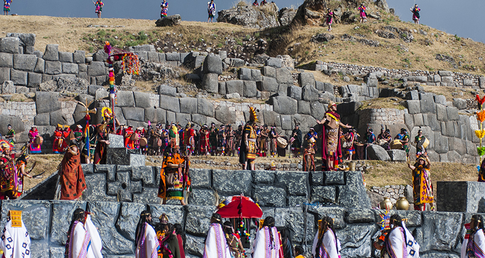

El dios Sol es el protagonista de una de las fiestas más importantes y tradicionales que se celebran en el Perú: el Inti Raymi o “Fiesta del Sol”.
El Inti Raymi es conocido en los pueblos chilenos como Dia Nacional de los pueblos Indígenas y está establecido y decretado desde el 24 de junio de 1998.
Simboliza el regreso triunfante del Sol en el día más corto y en la noche más larga renueva la naturaleza y es motivo de júbilo y fiesta.
Durante esta fecha, miles de turistas nacionales y extranjeros recorren las calles del centro histórico del Cusco y se congregan en las explanadas de sus principales recintos para vivir de cerca una especial jornada de actividades culturales cuyo fin es revalorar el legado inka. Son más de 800 personas, entre actores, bailarines y músicos quienes - vestidos con prendas típicas- protagonizan una serie de escenificaciones que incluyen danzas, actuaciones y alabanzas realizadas en los exteriores del templo de Qorikancha y el parque arqueológico de Sacsayhuamán, así como en la Plaza de Armas de la ciudad.
Me gustaria viajar a Perú y vivir el festival junto con mi familia, conocer mas de su cultura y origen de sus tradiciones.